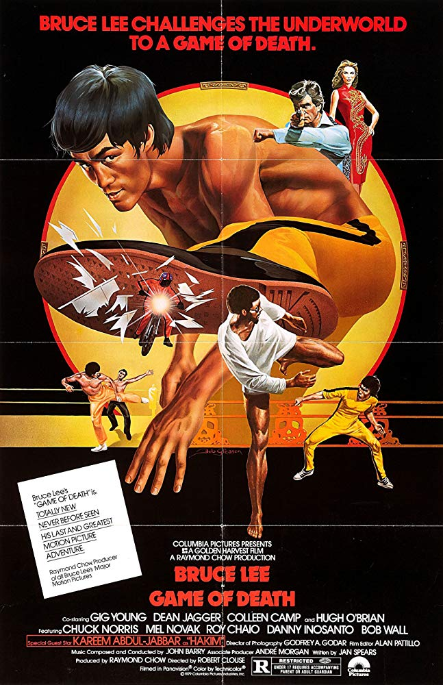
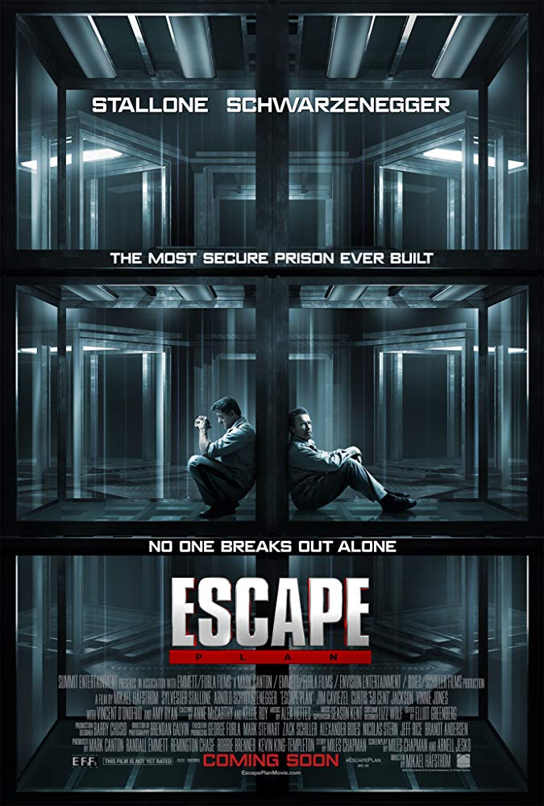
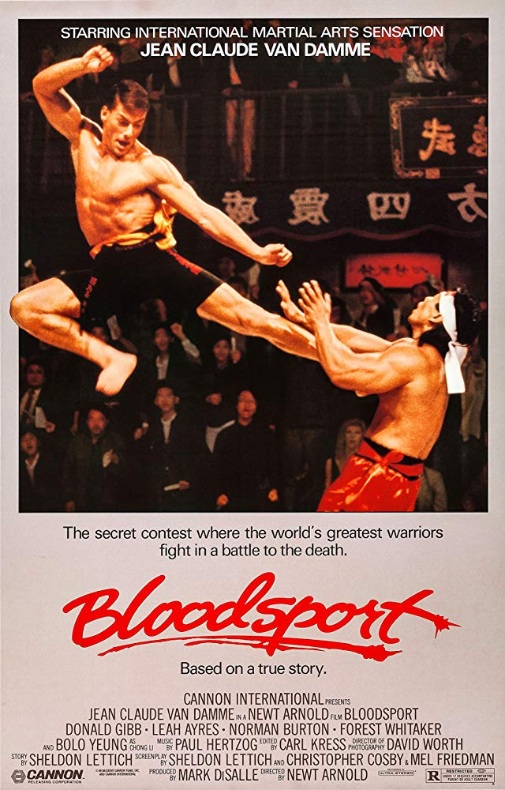
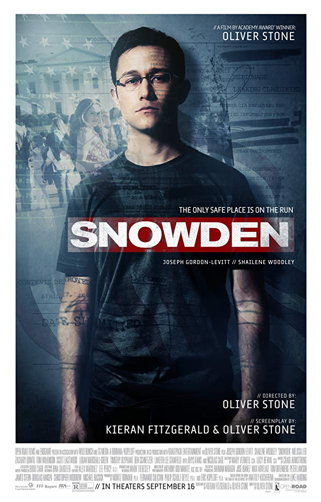
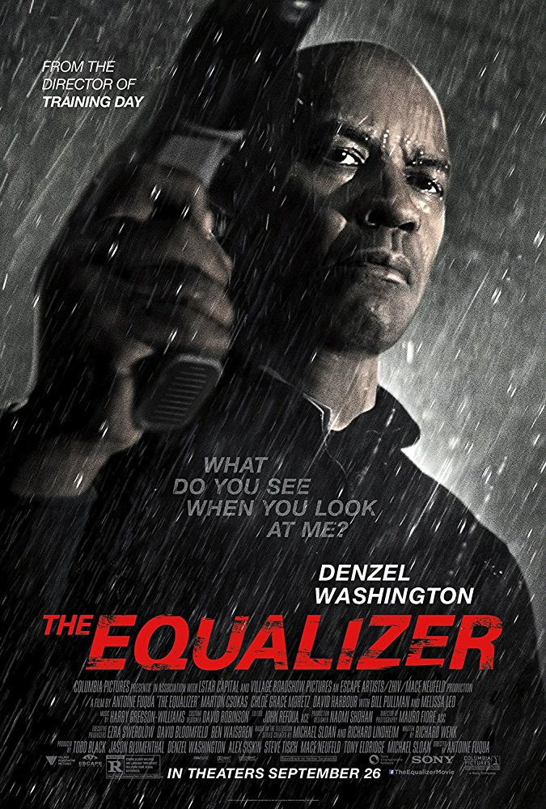

Home
Movies
Game of Death

Genre: Action, Crime, Drama
Country: Hong Kong, USA
Release Date: 23 March 1978 (Hong Kong)
Cast: Bruce Lee, Colleen Camp, Dean Jagger, Gig Young, Robert Wall, Kareem Abdul-Jabbar, Chuck Norris
Storyline: In this movie, Bruce Lee is a very famous martial-arts master who stars in many films. After
an unsuccessful murder attempt against him, everyone thinks his is dead, but he's just hiding, preparing his
revenge...
Escape Plan

Genre: Action, Crime, Mystery
Country: USA
Release Date: 17 October 2013 (Russia)
Cast: Sylvester Stallone, Arnold Schwarzenegger, Jim Caviezel, Faran Tahir, Amy Ryan
Storyline: Ray Breslin is the world's foremost authority on structural security. After analyzing every high
security prison and learning a vast array of survival skills so he can design escape-proof prisons, his skills
are put to the test. He's framed and incarcerated in a master prison he designed himself. He needs to escape
and find the person who put him behind bars.
Bloodsport

Genre: Action, Biography, Drama
Country: USA
Release Date: 29 April 1988 (USA)
Cast: Jean-Claude Van Damme, Donald Gibb, Leah Ayres, Norman Burton, Forest Whitaker, Roy Chiao, Bolo Yeung
Storyline: Frank Dux has spent most his life being trained by Tanaka to participate in the Kumite, the ultimate
martial arts tournament, where participants are seriously injured, even killed. Frank decides to go despite
being told by his superiors in the army that he can't because they need him. Two army officers are sent to
get him and the trail leads to Hong Kong but Frank eludes them. While Frank advances, he knows that he may
have to face Chong Li, the defending champion, who has killed a few participants.
Snowden

Genre: Biography, Drama, Thriller
Country: France, Germany, USA, UK
Release Date: 15 September 2016 (Russia)
Cast: Melissa Leo, Zachary Quinto, Joseph Gordon-Levitt, Jaymes Butler, Robert Firth
Storyline: SNOWDEN stars Joseph Gordon-Levitt and is written and directed by Oliver Stone. The script is based
on the books The Snowden Files: The Inside Story of
the World's Most Wanted Man by Luke Harding and Time of the Octopus by Anatoly Kucherena.
The Equalizer

Genre: Action, Crime, Thriller
Country: USA
Release Date: 25 September 2014 (Russia)
Cast: Denzel Washington, Marton Csokas, Chloë Grace Moretz, David Harbour, Bill Pullman, Melissa Leo
Storyline: The Equalizer stars Denzel Washington as Robert McCall, a former Black Ops commando who faked his
own death in hopes of living out a quiet life in Boston. However, when he comes out of his self-imposed
retirement to save a young girl named Teri "Chloë Grace Moretz", he finds his thirst for justice reawakened
after coming face-to-face with a syndicate of brutal Russian gangsters. Afterwards, McCall becomes the go-to
man when the helpless require the kind of vengeance they would never find without his skills.